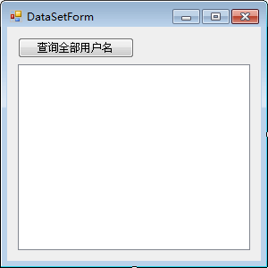
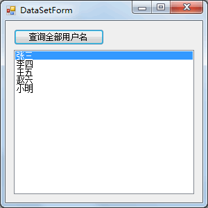

首页 > 编程笔记
C# DataSet和DataTable：将查询结果保存到DataSet或DataTable中
在执行对表中数据的查询时还能将数据保存到 DataSet 中，但需要借助 DataAdapter 类来实现。
在实际应用中，DataAdapter 与 DataSet 是在查询操作中使用最多的类。
此外，还可以通过 DataSet 实现对表中数据的增加、修改、删除操作。
SqlDataAdapter 类的主要构造方法如下表所示。
从 SqlDataAdapter 类的构造方法可以看出，SqlDataAdapter 类需要与 SqlCommand 类和 SqlConnection 类一起使用。
SqlDataAdapter 类常用的属性和方法如下表所示。
DataSet 类是一种与数据库结构类似的数据集，每个 DataSet 都是由若干个数据表构成的，DataTable 即数据表，每个 DataTable 也都是由行和列构成的，行使用 DataRow 类表示、列使用 DataColumn 类表示。
此外，用户还可以通过 DataRelation 类设置数据表之间的关系。
下面介绍 DataSet 类以及 DataTable 类的使用。
DataSet 类中常用的属性和方法如下表所示。
从 SqlDataAdapter 类的填充方法 (Fill) 中可以看出允许将数据直接填充到 DataTable 中，这样既能节省存储空间也能简化查找数据表中的数据。
DataTable 中常用的构造方法如下表所示。
DataTable 与 DataSet 有很多相似的属性和方法，在下表中列出了一些与 DataSet 类不同的属性。
下面分别通过实例来演示 DataSet 和 DataTable 的使用。
【实例】创建 Windows 应用程序，查询用户信息表（userinfo）中的所有用户名，并将用户名显示在列表控件（ListBox）中。
根据题目要求，设置用户信息查询界面如下图所示。
单击“查询全部用户名”按钮，将所有用户名显示到 ListBox 控件中，首先使用 DataSet 对象存储查询结果，代码如下。
从上面的运行效果可以看出，已经将用户信息表 (userinfo) 中的所有用户名显示在列表控件 (ListBox) 中。
需要注意的是，ListBox 控件中的 DataSource 属性用于设置控件中内容的数据源，并需要通过 DisplayMember 属性来指定显示在 ListBox 控件中的内容。
在本实例中将 DataSet 对象换成 DataTable 对象，更改部分代码如下。
对于 Windows 应用程序中的控件，除了可以使用代码为其 DataSource 属性设置数据源外，也可以用 Windows 应用程序中所带的自动绑定功能实现。
在实际应用中，DataAdapter 与 DataSet 是在查询操作中使用最多的类。
此外，还可以通过 DataSet 实现对表中数据的增加、修改、删除操作。
DataAdapter 与 DataSet 类简介
DataAdapter 类用于将数据表中的数据查询出来并添加到 DataSet 中，DataAdapter 在 System.Data.SqlClient 命名空间下对应的类名是 SqlDataAdapter。SqlDataAdapter 类的主要构造方法如下表所示。
| 构造方法 | 说明 |
|---|---|
| SqlDataAdapter(SqlCommand cmd) | 带参数的构造方法，传递 SqlCommand 类的对象作为参数 |
| SqlDataAdapter(string sql, SqlConnection conn) | 带参数的构造方法，sql 参数是指定对数据表执行的 SQL 语句，conn 是数据库的连接对象 |
| SqlDataAdapter() | 不带参数的构造方法 |
从 SqlDataAdapter 类的构造方法可以看出，SqlDataAdapter 类需要与 SqlCommand 类和 SqlConnection 类一起使用。
SqlDataAdapter 类常用的属性和方法如下表所示。
| 属性或方法 | 说明 |
|---|---|
| SelectCommand | 属性，设置 SqlDataAdapter 中要执行的查询语句 |
| InsertCommand | 属性，设置 SqlDataAdapter 中要执行的添加语句 |
| UpdateCommand | 属性，设置 SqlDataAdapter 中要执行的修改语句 |
| DeleteCommand | 属性，设置 SqlDataAdapter 中要执行的删除语句 |
| Fill(DataSet ds) | 方法，将 SqlDataAdapter 类中查询出的结果填充到 DataSet 对象中 |
| Fill(DataTable dt) | 方法，将 SqlDataAdapter 类中查询出的结果填充到 DataTable 对象 中，DataTable是数据表对象，在一个DataSet对象中由多个 DataTable对象构成 |
| Update(DataSet ds) | 方法，更新 DataSet 对象中的数据 |
| Update(DataTable dt) | 方法，更新 DataTable 对象中的数据 |
DataSet 类是一种与数据库结构类似的数据集，每个 DataSet 都是由若干个数据表构成的，DataTable 即数据表，每个 DataTable 也都是由行和列构成的，行使用 DataRow 类表示、列使用 DataColumn 类表示。
此外，用户还可以通过 DataRelation 类设置数据表之间的关系。
下面介绍 DataSet 类以及 DataTable 类的使用。
1) DataSet 类
DataSet 类中的构造方法如下表所示。| 构造方法 | 说明 |
|---|---|
| DataSet() | 无参构造方法 |
| DataSet(string DataSetName) | 带参数的构造方法，DataSetName 参数用于指定数据集名称 |
DataSet 类中常用的属性和方法如下表所示。
| 属性或方法 | 说明 |
|---|---|
| Tables | 属性，获取 DataSet 中所有数据表的集合，Tables[0] 代表集合中的第一个数据表 |
| CaseSensitive | 属性，获取或设置 DataSet 中的字符串是否区分大小写 |
| Relations | 属性，获取 DataSet 中包含的关系集合 |
| Clear() | 方法，清空 DataSet 中的数据 |
| Copy() | 方法，复制 DataSet 中的数据 |
| AcceptChanges() | 方法，更新 DataSet 中的数据 |
| HasChanges() | 方法，获取 DataSet 中是否有数据发生变化 |
| RejectChanges() | 方法，撤销对 DataSet 中数据的更改 |
2) DataTable
DataTable 作为 DataSet 中的重要对象，其与数据表的定义是类似的，都是由行和列构成，并有唯一的表名。从 SqlDataAdapter 类的填充方法 (Fill) 中可以看出允许将数据直接填充到 DataTable 中，这样既能节省存储空间也能简化查找数据表中的数据。
DataTable 中常用的构造方法如下表所示。
| 构造方法 | 说明 |
|---|---|
| DataTable() | 无参构造方法 |
| DataTable(string TableName) | 带参数的构造方法， TableName 参数用于指定数据表的名称 |
DataTable 与 DataSet 有很多相似的属性和方法，在下表中列出了一些与 DataSet 类不同的属性。
| 属性 | 说明 |
|---|---|
| TableName | 属性，获取或设置 DataTable 的名称 |
| Columns | 属性，获取 DataTable 中列的集合 |
| Rows | 属性，获取 DataTable 中行的集合 |
| DataSet | 属性，获取 DataTable 所在的 DataSet |
| Constraints | 属性，获取 DataTable 中的所有约束 |
使用 DataSet 和 DataTable 类存放查询结果
在实际应用中，将查询结果存储到 DataSet 类或 DataTable 类中均可，在操作查询结果时也非常类似。下面分别通过实例来演示 DataSet 和 DataTable 的使用。
【实例】创建 Windows 应用程序，查询用户信息表（userinfo）中的所有用户名，并将用户名显示在列表控件（ListBox）中。
根据题目要求，设置用户信息查询界面如下图所示。

单击“查询全部用户名”按钮，将所有用户名显示到 ListBox 控件中，首先使用 DataSet 对象存储查询结果，代码如下。
//“查询全部用户”按钮的单击事件
private void button1_Click(object sender, EventArgs e)
{
//编写数据库连接串
string connStr = "Data Source=.; Initial Catalog=test;User ID=sa;Password=root";
//创建 SQLConnection 的实例
SqlConnection conn = null;
try
{
conn = new SqlConnection(connStr);
//打开数据库连接
conn.Open();
string sql = "select name from userinfo";
//创建 SQLDataAdapter 类的对象
SqlDataAdapter sda = new SqlDataAdapter(sql, conn);
//创建DataSet类的对象
DataSet ds = new DataSet();
//使用SQLDataAdapter对象sda将查询结果填充到Dataset对象ds中
sda.Fill(ds);
//设置ListBox控件的数据源（DataSource）属性
listBox1.DataSource = ds.Tables[0];
//在listBox控件中显示name列的值
listBox1.DisplayMember = ds.Tables[0].Columns[0].ToString();
}
catch(Exception ex)
{
MessageBox.Show("查询失败！" + ex.Message);
}
finally
{
if (conn != null)
{
//关闭数据库连接
conn.Close();
}
}
}
运行该窗体，效果如下图所示。

从上面的运行效果可以看出，已经将用户信息表 (userinfo) 中的所有用户名显示在列表控件 (ListBox) 中。
需要注意的是，ListBox 控件中的 DataSource 属性用于设置控件中内容的数据源，并需要通过 DisplayMember 属性来指定显示在 ListBox 控件中的内容。
在本实例中将 DataSet 对象换成 DataTable 对象，更改部分代码如下。
//创建 SqlDataAdapter 类的对象 SqlDataAdapter sda = new SqlDataAdapter(sql, conn); //创建 DataTable 类的对象 DataTable dt = new DataTable(); //使用 SqlDataAdapter 对象 sda 将查询结果填充到 DataSet 对象 dt 中 sda.Fill(dt); //设置 ListBox 控件的数据源(DataSource)属性 listBox1.DataSource = dt; //在 ListBox 控件中显示 name 列的值 listBox1.DisplayMember = dt.Columns[0].ToStiring();更改后再次运行窗体，效果与上图—样。
对于 Windows 应用程序中的控件，除了可以使用代码为其 DataSource 属性设置数据源外，也可以用 Windows 应用程序中所带的自动绑定功能实现。
关注公众号「站长严长生」，在手机上阅读所有教程，随时随地都能学习。内含一款搜索神器，免费下载全网书籍和视频。

微信扫码关注公众号